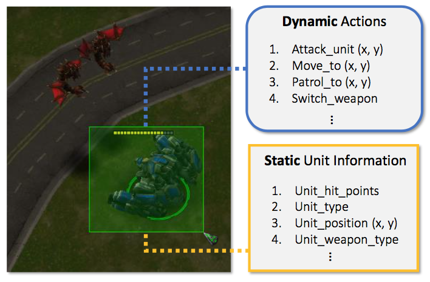
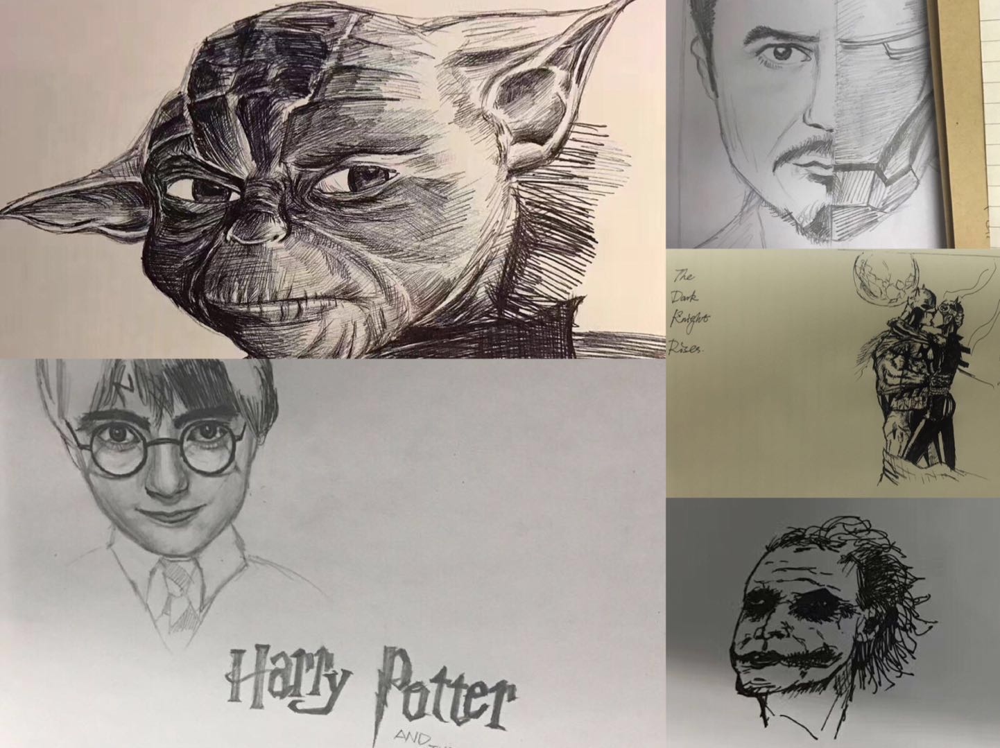

About Me
Hi, Thank you for visiting my homepage! My name is Fangchen Liu (刘芳辰). Its Chinese meaning is keeping and remembering the great moments.
I am a first-year M.S. Candidate at Computer Science Department in UC San Diego, advised by Prof. Hao Su. Before that, I received the B.S. in Computer Science from Peking University in 2018 with honor, and worked with Prof. Yizhou Wang and Dr. Bo Xin on reinforcement learning and multi-agent systems.
My research interests mainly lie in computer vision, machine learning and their applications.
Education

Computer Science and Engineering, University of California, San Diego
Sep. 2018 - Dec. 2019 (Expected)Master of Science

Department of Computer Science, Peking University
Sep. 2014 - Jul. 2018Bachelor of Science
Publications
(* indicates equal contribution)
Effective Master-Slave Communication On A Multi-Agent Deep Reinforcement Learning System.
Accepted to Hierarchical Reinforcement Learning Workshop at NIPS, 2017.
Revisiting the Master-slave Architecture in Multi-agent Deep Reinforcement Learning. ArXiv: 1712.07305
A Driving Video Database with Scalable Annotation Tooling. ArXiv: 1805.04687
Research Projects

{kind=link}
Solving Micromanagement Problems in StarCraft II Using A3C and Multi-Scale Anchors
Sep. 2017 - Jan. 2018, Microsoft Research Asia,
Inspired by some one-stage state-of-the-art detection methods, we propose an "Anchored A3C" agent to learn proper grouping policies with the capacities of both allocating armies and fighting against enemies, which achieved better performance on StarCraft II micromanagement tasks.

Hierarchical Communication and Collaboration in Multi-Agent Reinforcement Learning
June 2017 - Sep. 2017, Peking University,
We propose the master-slave architecture to combine the centralized perspective (the master) with the decentralized ones (the slaves), which is proved to be an effective communication mechanism by conducting experiments on StarCraft environment and the traffic junction tasks.
Work Experience
Research Intern, Visual Computing Group
Sep. 2017 - Mar. 2018, Beijing, China
Research Intern, Face Detection and Recognition Group
Sep. 2016 - Mar. 2017, Beijing, China
Worked on face set recognition and memory networks. Some results were integrated into the company's deep learning framework and products.
More
I'm fond of music, both the vocal and instruments. I have learned piano for more than 10 years, but unluckily I didn't have much time practicing it after I went to university. Besides, I can also play some Chinese instruments such as ErHu (a two-stringed instrument) and Zither.
Since both my grandpa and father are architects, I also love painting. Here are some sketches I recently finished... Yes, I am a fan of Star Wars, Harry Potter, Marvel and DC.
P.S.
Before going to Peking University, I thought computer vision is about creating visual arts, but sadly I was wrong. And computer graphics neither.